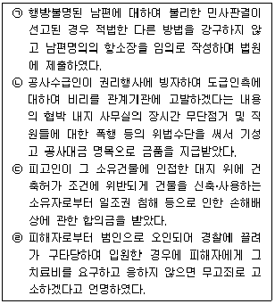
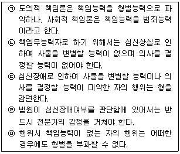
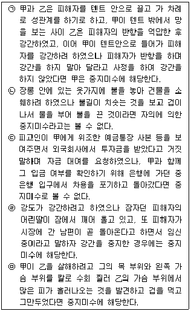
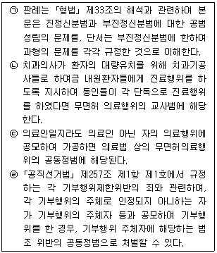
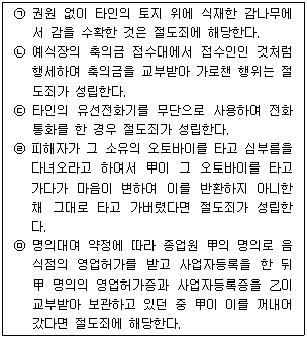
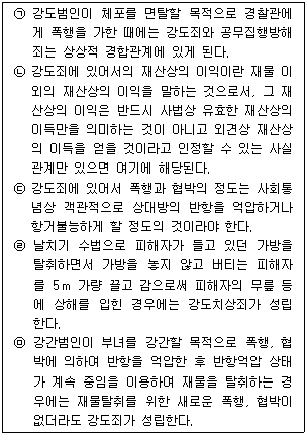
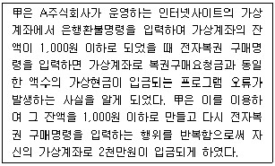
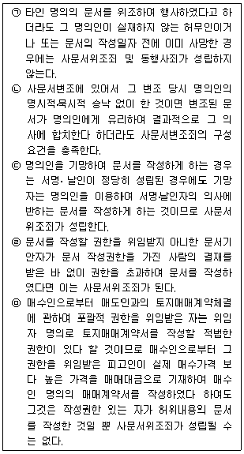

경찰공무원(순경)-형법 (2014-08-30 기출문제)
1. 죄형법정주의에 관한 다음 설명 중 가장 적절하지 않은 것은?(다툼이 있으면 판례에 의함)
- 성문법률주의란 범죄와 형벌은 성문의 법률로 규정되어야 한다는 원칙을 말하며 여기서의 법률은 형식적 의미의 법률을 의미한다.
- 특히 긴급한 필요가 있거나 미리 법률로써 자세히 정할 수 없는 부득이한 사정이 있는 경우에 한하여 수권법률(위임법률)이 구성요건의 점에서는 처벌대상인 행위가 어떠한 것인지 이를 예측할 수 있을 정도로 구체적으로 정하고, 형벌의 점에서는 형벌의 종류 및 그 상한과 폭을 명확히 규정하는 것을 전제로 위임입법이 허용된다.
- 일반적으로 법률의 위임에 의하여 효력을 갖는 법규명령의 경우 구법에 위임의 근거가 없어 무효였더라도 사후에 법 개정으로 위임의 근거가 부여되면 그때부터는 유효한 법규명령이 된다.
- ｢특정범죄가중처벌등에관한법률｣의 위임을 받은 동법 시행령에서 농업협동조합중앙회를'정부관리기업체'의 하나로 규정한 경우 위임입법의 한계를 벗어난 것이다.
(정답률: 64%)

2. 형벌규정의 적용에 관한 다음 설명 중 가장 적절하지 않은 것은? (다툼이 있으면 판례에 의함)
- 포괄일죄로 되는 개개의 범죄행위가 법률 개정의 전ㆍ후에 걸쳐서 행하여진 경우에는 신ㆍ구법의 법정형에 대한 경중을 비교하여 볼 필요도 없이 범죄실행 종료시의 법이라고 할 수 있는 신법을 적용하여 포괄일죄로 처단하여야 한다.
- 범죄 후 법률의 변경에 의하여 형이 구법보다 경한 때에는 신법에 의한다고 규정하고 있으나 신법에 경과규정을 두어 이러한 신법의 적용을 배제하는 것도 허용된다.
- 범죄 후 법률의 변경에 의하여 신법의 형이 구법보다 경한 경우에도 공소시효기간의 기준은 행위시법인 구법의 법정형이 된다.
- 대법원 양형위원회가 설정한 '양형기준'이 발효하기 전에 공소가 제기된 범죄에 대하여 위 양형기준을 참고하여 형을 양정한 경우에도 피고인에게 불리한 법률을 소급적용한 위법이 있는 것은 아니다.
(정답률: 80%)
3. 부작위범에 관한 다음 설명 중 가장 적절한 것은?(다툼이 있으면 판례에 의함)
- 진정부작위범과 부진정부작위범의 구별에 관한 학설 중 실질설은 거동범에 대하여는 부진정부작위범이 성립할 여지가 없다고 보는 반면에, 형식설은 결과범은 물론 거동범에 대하여도 부진정부작위범이 성립할 수 있다고 본다.
- 부작위에 의한 사기죄에서 작위의무의 발생근거는 유기죄에서 보호의무의 발생근거보다 그 범위가 좁다.
- 어떠한 범죄가 적극적 작위 또는 소극적 부작위에 의하여도 실현될 수 있는 경우에, 행위자가 자신의 신체적 활동이나 물리적ㆍ화학적 작용을 통하여 적극적으로 타인의 법익 상황을 악화시킴으로써 결국 그 타인의 법익을 침해하기에 이르렀다면, 이는 부작위에 의한 범죄로 봄이 원칙이다.
- ｢도로교통법｣ 제54조의 교통사고운전자의 사상자구호조치의무는 위법한 선행행위의 경우에만 작위의무를 인정한 것이라고 할 수 있다.
(정답률: 62%)
4. 다음 설명 중 가장 적절하지 않은 것은? (다툼이 있으면 판례에 의함)
- 미필적 고의라 함은 결과의 발생이 불확실한 경우, 즉 행위자에 있어서 그 결과발생에 대한 확실한 예견은 없으나 그 가능성은 인정하는 것으로, 이러한 미필적 고의가 있었다고 하려면 결과발생의 가능성에 대한 인식이 있음은 물론 나아가 결과발생을 용인하는 내심의 의사가 있음을 요한다.
- 피고인의 구타행위로 상해를 입은 피해자가 정신을 잃고 빈사상태에 빠지자 사망한 것으로 오인하고, 자신의 행위를 은폐하고 피해자가 자살한 것처럼 가장하기 위하여 피해자를 베란다 아래의 바닥으로 떨어뜨려 사망케 하였다면, 피고인의 행위는 포괄하여 단일의 상해치사죄에 해당한다.
- 甲이 乙 등 3명과 싸우다가 힘이 달리자 식칼을 가지고 이들 3명을 상대로 휘두르다가 이를 말리면서 식칼을 뺏으려던 피해자 丙에게 상해를 입혔다면, 상해를 입은 사람이 목적한 사람이 아닌 다른 사람이므로 과실치상죄에 해당한다.
- 행정상의 단속을 주안으로 하는 법규라 하더라도'명문규정이 있거나 해석상 과실범도 벌할 뜻이 명확한 경우'를 제외하고는 형법의 원칙에 따라'고의'가 있어야 벌할 수 있다.
(정답률: 알수없음)
5. 다음 중 위법성이 조각되는 경우(O)와 조각되지 않는 경우(X)를 바르게 연결한 것은? (다툼이 있으면 판례에 의함)

- ㉠ (O) ㉡ (X) ㉢ (X) ㉣ (X)
- ㉠ (O) ㉡ (O) ㉢ (X) ㉣ (O)
- ㉠ (X) ㉡ (X) ㉢ (O) ㉣ (X)
- ㉠ (X) ㉡ (X) ㉢ (O) ㉣ (O)
(정답률: 47%)
6. 책임능력에 관한 다음 설명 중 옳지 않은 것은 모두 몇 개인가? (다툼이 있으면 판례에 의함)

- 2개
- 3개
- 4개
- 5개
(정답률: 알수없음)
7. 공무집행방해죄 등에 관한 다음 설명 중 가장 적절하지 않은 것은? (다툼이 있으면 판례에 의함)
- 甲 정당 당직자인 피고인들 등이 국회 외교통상 상임위원회 회의장 출입문 앞에 배치되어 출입을 막고 있던 국회 경위들을 밀어내기 위해 경위들의 옷을 잡아당기거나 밀치는 등의 행위를 한 경우, 피고인들의 행위는 적법성이 결여된 직무행위를 하는 공무원에게 대항하여 한 것에 지나지 아니하여 공무집행방해죄가 성립하지 않는다.
- 피고인이 甲 시청 옆 도로의 보도에서 철야농성을 위해 천막을 설치하던 중 이를 제지하는 甲 시청 소속공무원들을 폭행한 경우, 도로관리권에 근거한 공무집행을 하는 공무원에 대하여 폭행을 가한 피고인의 행위는 공무집행방해죄를 구성한다.
- 불법주차 단속권한이 없는 야간 당직 근무 중인 구청 소속 청원경찰에게 불법주차 단속을 요구하였으나 그 청원경찰이 현장을 확인만 하고 주간 근무자에게 전달하여 단속하겠다고 했다는 이유로 민원인이 청원경찰을 폭행한 경우, 그 민원인에게는 공무집행방해죄가 성립하지 않는다.
- 자가용차를 운전하다가 교통사고를 낸 사람이 경찰관서에 신고함에 있어 가해차량이 자가용일 경우 피해자와 합의하는데 불리하다고 생각하여 영업용 택시를 운전하다가 사고를 내었다고 허위신고를 한 경우 위계에 의한 공무집행방해죄가 성립하지 않는다.
(정답률: 알수없음)
8. 중지미수범에 관한 다음 설명 중 옳지 않은 것을 모두 고른 것은? (다툼이 있으면 판례에 의함)

- ㉠, ㉡, ㉢, ㉤
- ㉠, ㉣, ㉤
- ㉡, ㉣, ㉤
- ㉠, ㉢, ㉣
(정답률: 79%)
9. 공범과 신분에 관한 다음 설명 중 옳지 않은 것은 모두 몇 개인가? (다툼이 있으면 판례에 의함)

- 없음
- 1개
- 2개
- 3개
(정답률: 알수없음)
10. 협박죄에 관한 다음 설명 중 가장 적절하지 않은 것은? (다툼이 있으면 판례에 의함)
- 법인은 협박죄의 객체가 될 수 없다.
- 해악의 고지가 상대방에게 도달하였다면 상대방이 지각하지 못하거나 고지된 해악의 의미를 인식하지 못한 경우에도 협박죄의 기수를 인정할 수 있다.
- 피고인이 혼자 술을 마시던 중 甲정당이 국회에서 예산안을 강행처리하였다는 것에 화가 나서 공중전화를 이용하여 경찰서에 여러 차례 전화를 걸어 전화를 받은 각 경찰관에게 경찰서 관할구역 내에 있는 甲정당의 당사를 폭파하겠다는 말을 한 사안에서, 피고인의 행위는 각 경찰관에 대한 협박죄를 구성하지 않는다.
- 제3자에 대한 법익 침해를 내용으로 하는 해악을 고지하더라도 피해자 본인과 제3자가 밀접한 관계에 있어 그 해악의 내용이 피해자 본인에게 공포심을 일으킬 만한 정도의 것이라면 협박죄가 성립할 수 있는데, 이때 제3자에는 자연인뿐만 아니라 법인도 포함된다 할 것이다.
(정답률: 알수없음)
11. 모욕죄 내지 명예훼손죄에 관한 다음 설명 중 가장 적절하지 않은 것은? (다툼이 있으면 판례에 의함)
- 명예훼손죄에서 특정인의 사회적 가치나 평가를 저하시키기에 충분한 구체적인 사실의 적시가 있다고 하기 위해서는 반드시 그러한 구체적인 사실이 직접적으로 명시되어 있을 것을 요구하는 것은 아니지만, 적어도 적시된 내용 중의 특정 문구에 의하여 그러한 사실이 곧바로 유추될 수 있을 정도는 되어야 한다.
- 개인의 블로그 비공개 대화방에서 일대일 비밀대화로 사실을 적시한 경우에도 공연성을 인정할 수 있다.
- 골프클럽 경기보조원들의 구직편의를 위해 제작된 인터넷 사이트 내 회원게시판에 특정 골프클럽의 운영상 불합리성을 비난하는 글을 게시하면서 클럽담당자에 대하여'한심하고 불쌍한 인간'이라는 등 경멸적 표현을 한 경우 모욕죄를 구성한다.
- 인터넷 포털사이트의 지식 검색 질문ㆍ답변 게시판에 성형시술 결과가 만족스럽지 못하다는 주관적인 평가를 주된 내용으로 하는 한 줄의 댓글을 게시한 경우, 사실의 적시에는 해당하지만 비방의 목적이 없어서 ｢정보통신망이용촉진및정보보호등에관한법률｣ 상의 명예훼손죄가 성립하지 않는다.
(정답률: 알수없음)
12. 다음 설명 중 가장 적절한 것은? (다툼이 있으면 판례에 의함)
- 주식회사의 임원 甲이 실질적 1인 주주의 양해 하에 공적 업무수행을 위하여서만 사용이 가능한 법인카드를 개인 용도로 사용한 경우 甲에게는 업무상 배임죄가 성립한다.
- 甲이 지붕과 문짝, 창문이 없고 담장과 일부 벽체가 붕괴된 철거 대상 건물이고 사실상 기거·취침에 사용할 수 없는 상태에 있는 폐가 내부와 외부에 쓰레기를 모아놓고 불을 놓은 경우 甲에게는 일반건조물등방화죄가 성립한다.
- 甲이 A초등학교 1학년 1반 교실 및 1학년 2반 교실 안에서 학생들에게 욕설을 하여 수업을 듣지 못하게 한 경우 甲에게는 학생들의 수업업무를 방해한 업무방해죄가 성립한다.
- 신규 직원 채용권한을 가지고 있는 지방공사 사장인 甲이 시험업무 담당자에게 지시하여 상호 공모 내지 양해 하에 시험성적조작 등의 부정한 행위를 하게 한 경우 甲에게는 위계에 의한 업무방해죄가 성립한다.
(정답률: 알수없음)
13. 절도죄에 관한 다음 설명 중 옳지 않은 것은 모두 몇 개인가?(다툼이 있으면 판례에 의함)

- 1개
- 2개
- 3개
- 4개
(정답률: 알수없음)
14. 방화죄에 관한 다음 설명 중 가장 적절하지 않은 것은? (다툼이 있으면 판례에 의함)
- 타인 소유의 현주건조물에 방화하자 불이 옆에 있는 자기 소유의 일반건조물에 옮겨 붙은 경우 연소죄가 성립한다.
- 불을 놓아 무주물의 일반물건을 소훼하여 공공의 위험을 발생하게 한 경우에는 ｢형법｣ 제167조 제2항의 자기소유일반물건방화죄가 성립한다.
- 강도가 피해자로부터 재물을 강취한 후 피해자를 살해할 목적으로 주거를 방화하여 사망에 이르게 한 때에는 강도살인죄와 현주건조물방화치사죄의 상상적 경합이 성립한다.
- 甲이 동거인과 가정불화로 홧김에 죽은 동생의 유품으로 보관 중이던 서적 등을 뒷마당에 내어놓고 불태우는 과정에서 건물에 불이 번진 때에는 현주건조물에 대한 방화의 범의를 인정하기 곤란하다.
(정답률: 알수없음)
15. 강도죄에 관한 다음 설명 중 옳지 않은 것은 모두 몇 개인가?(다툼이 있으면 판례에 의함)

- 1개
- 2개
- 3개
- 4개
(정답률: 알수없음)
16. 다음 사례에 관한 설명으로 가장 적절한 것은? (다툼이 있으면 판례에 의함)

- 甲은 허위의 정보를 입력하는 방법으로 기망행위를 하고 이를 통하여 A주식회사의 계좌로부터 자신의 계좌로 돈을 입금되도록 하였는바, 사기죄로 처벌된다.
- 甲은 관리자인 A주식회사의 의사에 반하여 부당하게 2천만원에 대한 법률적 지배권한을 획득하였는바, 그에 대하여 절도죄의 책임을 부담한다.
- 甲은 사실상의 신임관계에 기초하여 A주식회사의 재물을 관리하는 지위에 서게 되는바, 甲이 1천만원을 임의로 인출, 소비하였다면 이는 횡령죄의 구성요건을 충족시킨다.
- 甲은 프로그램 자체에서 발생하는 오류를 적극적으로 이용하여 부정한 명령을 입력한 것이므로 컴퓨터등사용사기죄로 처벌된다.
(정답률: 60%)
17. 다음 중 (업무상)횡령죄가 성립하지 않는 경우는? (다툼이 있으면 판례에 의함)
- 임차인이 이사하면서 그가 소유하거나 타인으로부터 위탁받아 보관 중이던 물건들을 임대인의 방해로 옮기지 못하고 그 임차공장 내에 그대로 두었는데 임대인이 그 후 이를 임의로 매각하거나 반환을 거부한 경우
- 보험을 유치하면서 특별이익 제공과는 무관한 통상적인 실적급여로서의 시책비를 지급받아 그 중 일부를 개인적인 용도로 사용한 경우
- 채권양도인이 채권양도 통지 전에 채무자로부터 채권추심하여 수령한 금전을 채권양수인의 승낙 없이 자신의 동생에게 빌려준 경우
- 지사에 근무하는 직원들이 본사를 위하여 보관 중이던 돈의 일부를 접대비 명목 등으로 임의로 나누어 사용하려고 비자금으로 조성한 경우
(정답률: 알수없음)
18. 사문서위조·변조죄에 관한 다음 설명 중 옳지 않은 것은 모두 몇 개인가? (다툼이 있으면 판례에 의함)

- 1개
- 2개
- 3개
- 4개
(정답률: 알수없음)
19. 뇌물죄에 관한 다음 설명 중 가장 적절하지 않은 것은? (다툼이 있으면 판례에 의함)
- 경찰청 정보과에 근무하는 甲이 乙로부터 그가 경영하는 회사가 외국인산업연수생에 대한 국내관리업체로 선정되도록 중소기업협동조합중앙회 회장인 丙에게 힘써 달라는 부탁을 받고 각종 향응을 받은 경우 수뢰죄가 성립한다.
- 수뢰자가 자기앞수표를 뇌물로 받아 이를 소비한 후 자기앞수표 상당액을 증뢰자에게 반환하였다 하더라도 뇌물 그 자체를 반환한 것은 아니므로 이를 몰수할 수 없고 수뢰자로부터 그 가액을 추징하여야 할 것이다.
- 구 해양수산부 소속 공무원인 피고인이 甲해운회사의 대표이사 등에게서 중국의 선박운항허가 담당부서가 관장하는 중국 국적선사의 선박에 대한 운항허가를 받을 수 있도록 노력해 달라는 부탁을 받고 돈을 받은 경우 뇌물수수죄가 성립하지 않는다.
- 임용될 당시 공무원법상 임용결격자에 해당하여 임용행위는 무효였지만 그 후 공무원으로 계속 근무하면서 직무에 관하여 뇌물을 수수한 경우에 수뢰죄가 성립한다.
(정답률: 62%)
20. 도주와 범인은닉의 죄에 관한 다음 설명 중 가장 적절하지 않은 것은? (다툼이 있으면 판례에 의함)
- 벌금 이상의 형에 해당하는 죄를 범한 자라는 것을 인식하면서도 도피하게 한 경우에는 그 자가 당시에는 아직 수사대상이 되어 있지 않았다고 하더라도 범인도피죄가 성립한다.
- 수사기관에서 조사받는 피의자가 사실은 게임장의 실제 업주가 아님에도 불구하고 자신이 실제 업주라고 허위로 진술하는 행위만으로도 범인도피죄를 구성한다.
- 사실혼관계에 있는 처(妻)가 범인인 남편을 위하여 범인은닉죄를 범한 경우에는 처벌된다.
- 참고인이 범인이 아닌 사람을 범인이 아닐지도 모른다고 생각하면서도 그가 범인이라고 지목하는 허위진술을 하여 구속기소되게 하였다면 범인도피죄가 성립하지 아니한다.
(정답률: 75%)